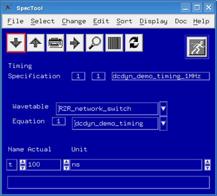

Defining a timing equation set for a dynamic DC test
This step of the example configuration for a dynamic DC test defines a timing equation set with a period.
Procedures
Timing
The timing file defines the timing equation set:
...
EQSP TIM,EQN,#nxxxx
EQNSET 1 "dcdyn_demo_timing"
SPECS
t [ns]
EQUATIONS
...
TIMINGSET 1
period = t
PINS Dig
d1 = 0
Note The pins statement is only valid for digital pins. Power (DPS) and signal (PMU) pins
only use the defined period and thus Do not require any PINS specification.
Period
The example sets the period with the t spec
variable to t = 100ns (1 MHz). You define the value in the SpecTool.

What to do next
Next you must create a pattern for the dynamic DC test.
Functional changes
- Introduced before SmarTest 6.3.2